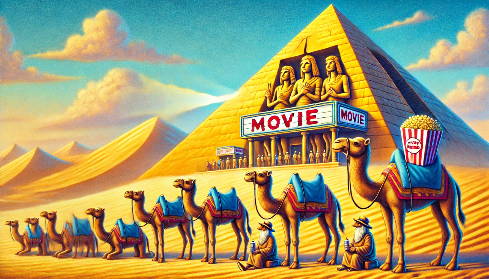

Jegyinformációk
Jegyárak
| Jegytípus | Leírás | Ár |
|---|---|---|
| Normál jegy | 1 teve számára. | 2000 |
| Prémium hely | Közelebb a vászonhoz, kényelmes homokpárnával. | 3500 |
| Csoportos jegy | 5 vagy több teve esetén kedvezményes ár. | Teve / 1500 |
Tevetulajdonosok figyelmébe
Hogyan parkoltasd a tevéd:
- Biztosítsd, hogy a tevéd kényelmesen várakozzon a piramis előtt.
- Hozz magaddal elegendő vizet és takarót a teve számára.
- Részt vehetsz a teve-tulajdonos programjainkon, amíg kedvenced filmet néz!
Megjegyzés: Ha a teve unatkozik a film alatt, kérjük, fordulj személyzetünkhöz!
Hogyan vásárolhatsz jegyet?
- Válaszd ki a filmet a műsorkínálatból.
- Döntsd el, hogy milyen típusú jegyet szeretnél.
- Fizesd ki online, vagy vásárold meg a helyszínen.
Gyakran Ismételt Kérdések
- Kérdés: Milyen filmeket nézhetnek a tevék?
Válasz: Csak tevebarát, izgalmas sivatagi kalandfilmeket vetítünk! - Kérdés: Hogyan parkolhatom le a tevém?
Válasz: A piramis előtt kijelölt teveparkolónkban. - Kérdés: Mi történik, ha a tevém unatkozik?
Válasz: Töltsön időt játszótérünkön vagy teve-felügyeleti programunkban!